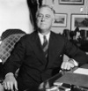

İlk defa dört dönem başkanlık yapan Franklin D. Roosevelt (1882–1945), Büyük Buhran döneminde ABD’yi yönetti. II. Dünya Savaşı’nda ve ülkenin yaşadığı büyük sosyal ve ekonomik değişimlerde halkına liderlik etti. Yaptığı reformlar arasında sosyal güvenlik programı, askeri ücret uygulaması ve sendikalaşma da vardır. Bu uygulamalar Amerikan politikasına yeni bir yön vermiş ve savaş sonrası Amerika’nın inşasında önemli bir rol oynamıştır. Roosevelt’in askeri liderliği Müttefiklerin faşizmi yenmesine de yardımcı olmuştur.

Franklin, ABD eski Başkanı Theodore Roosevelt’in (1858–1919) uzak bir akrabasıydı. New York’un zengin bölgelerinden biri olan Hyde Park’ta doğdu. Harvard’a gitti. Wall Street’te çalıştı. Roosevelt ailesinin bir başka üyesi olan Eleanor Roosevelt (1884–1962) ile 1905 yılında evlendi.
Ünlü kuzeni Cumhuriyetçi olmasına rağmen Franklin politikaya Demokrat Parti saflarında katıldı. 1920 yılında başkan yardımcılığı için mücadele etti. İlk seçimi kaybetse de 1928 yılında New York valisi oldu. Bu dönemde ülkenin en büyük eyaletine vali olmak başkanlık için önemli bir adım olarak görülüyordu.
Borsanın çöküşü ABD ekonomisini derin bir krize sürükleyince Roosevelt, Cumhuriyetçi rakibi Herbert Hoover’ı (1874–1964) 1932 yılında kolaylıkla yendi. Zira krizden büyük ölçüde Hoover sorumlu tutuluyordu.
Göreve başlayınca bir dizi yeni ekonomik politikayı uygulamaya soktu. New Deal (Yeni Düzen) adı verilen program krizle mücadele etmeyi amaçlıyordu. Yol, köprü, baraj gibi kamu yatırımlarına milyarlarca dolar harcadı. İnsanların yeniden istihdam edilmesi için uğraştı. İşçiler ve yaşlılar için sosyal refah programları geliştirdi. Tüm bunlar, federal hükümetin ekonomideki rolünü arttırıyordu. II. Dünya Savaşı yıllarında ABD ekonomisini savaş koşullarına göre yapılandırdı. İngiltere Başbakanı Winston Churchill (1874–1965) ile birlikte 1941 yılında Atlantik Bildirisi’ni imzalayarak ve 1945 yılındaki Yalta Konferansı’na katılarak savaş sonrası dünyanın temellerini attı.
Roosevelt 1945 yılının Nisan ayında beyin kanamasından öldü. Oysa dördüncü dönem başkanlığı henüz yeni başlamıştı. Öldüğü sırada altmış iki yaşındaydı.
Ek Bilgiler
1- Başkanlığının son beş yılında Fala adında bir İskoç teriyeri vardı (Bu isim Roosevelt’in atalarından birinden geliyordu). 1997 yılında Washington DC’de açılan Roosevelt anıtında köpeğinin de bir heykeli vardır.
2- Roosevelt’in üç ayrı başkan yardımcısı oldu. John Nance Garner (1868–1967) başkanla arası açılınca 1940 yılındaki Demokrat Parti başkan adaylığı için onunla yarıştı. Henry A. Wallace (1888–1965), dış politika alanındaki farklı düşünceleri nedeniyle 1944 yılında Roosevelt tarafından görevden alındı. Harry S. Truman (1884–1972) ise onun halefi oldu.
3- Roosevelt ABD’nin ilk kadın kabine üyesi olan çalışma bakanı Frances Perkins’i (1882–1965) atadı.